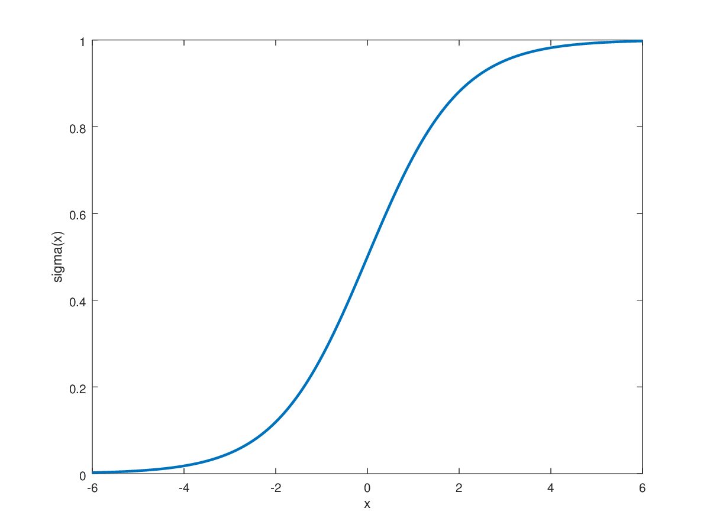

The sigmoid function has a characteristic 'S'-like curve and possesses several interesting properties that make it an obvious choice as a threshold function.
The sigmoid function is defined as:
Please note that equation (1) could just as well
be written as \(\sigma(x) = \frac{e^x}{{e^x} + 1}\) (seen by multiplying equation
(1) by \(\frac{e^x}{e^x}\), i.e. multiplying by 1).
$$\begin{equation}
\sigma(x) = \frac{1}{1 + e^{-x}}
\end{equation}$$

Figure 1: The elongated 'S'-like curve of the sigmoid function
\( \lim_{x \to \infty} \sigma(x) = 1 \)
$$
\lim_{x \to -\infty} \sigma(x) = 0
$$
Figure 2: The bell-shaped curve of the derivative of the sigmoid function